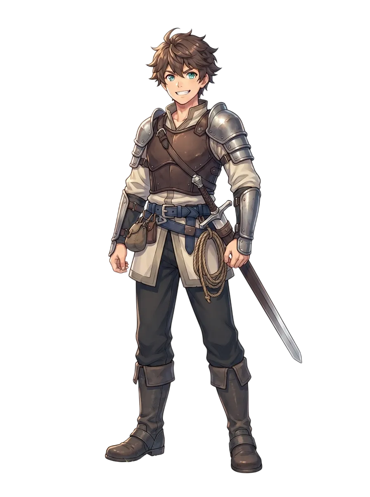

HUMAN / FIGHTER
村育ちの若いファイター
「この大地を開き、誰よりも先に世界の先端を踏みしめる。」
- 前職
- 農牧従事（平和な農村）
- 成長特性
- 標準的な成長曲線（平均型）
- 動機
- 未知の外の世界への純粋な憧憬
- 適性
- 悪路走破 / モンスター調教
能力と探索スタイル
農村育ちの強靭なスタミナと地形踏破力を誇る。家畜の世話で培った観察眼から野生モンスターの調教に長けるが、魔法や繊細な道具の扱いは不得意。